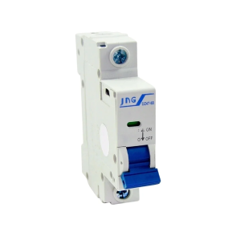
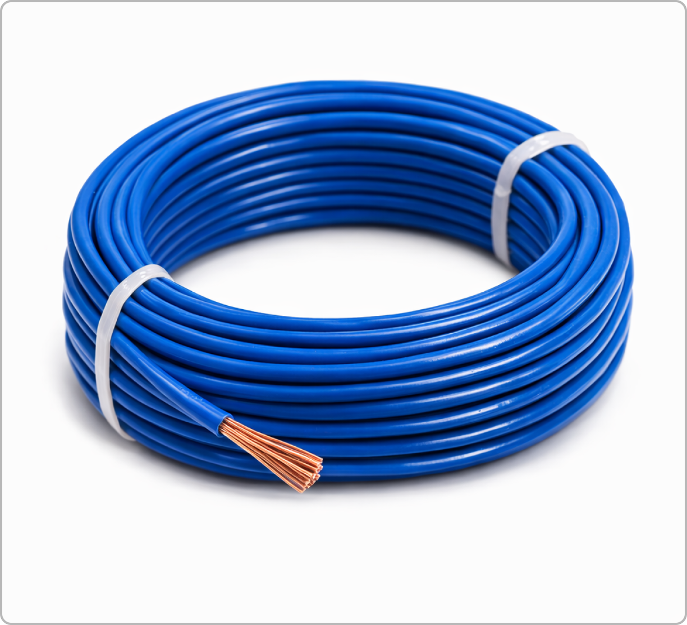

Cód: DJT-63A-3P-001
Em estoque
De R$ 189,90
R$ 142,90
ou 3x de R$ 47,63 sem juros
O Disjuntor Tripolar 63A com Curva C é ideal para proteção de circuitos trifásicos em instalações residenciais, comerciais e industriais leves. Projetado para oferecer máxima segurança e confiabilidade, este disjuntor protege seus equipamentos contra sobrecargas e curtos-circuitos.
Fabricado com materiais de alta qualidade, o disjuntor possui contatos em prata que garantem maior durabilidade e menor aquecimento. O sistema de extinção de arco elétrico é projetado para interromper rapidamente correntes de falta, protegendo toda a instalação.
A curva C é especialmente indicada para cargas com corrente de partida moderada, como motores, transformadores e iluminação em geral. Com capacidade de interrupção de 6kA, este disjuntor atende à maioria das aplicações residenciais e comerciais.
| Corrente Nominal (In) | 63A |
| Número de Polos | 3 Polos |
| Curva de Disparo | C (5 a 10 × In) |
| Capacidade de Interrupção | 6kA em 240V |
| Tensão Nominal | 220/380V CA |
| Frequência | 50/60 Hz |
| Normas | NBR IEC 60898-1, NBR NM 60898 |
| Grau de Proteção | IP20 |
| Temperatura de Operação | -5°C a +40°C |
| Seção de Cabos | 10 a 35 mm² |
| Durabilidade Mecânica | 20.000 manobras |
| Durabilidade Elétrica | 10.000 manobras |
| Dimensões (A×L×P) | 54 × 72 × 78 mm |
| Peso | 280g |
| Garantia | 2 anos |
ATENÇÃO: A instalação deve ser realizada por eletricista qualificado e habilitado. Sempre desligue a energia antes de iniciar qualquer trabalho elétrico.